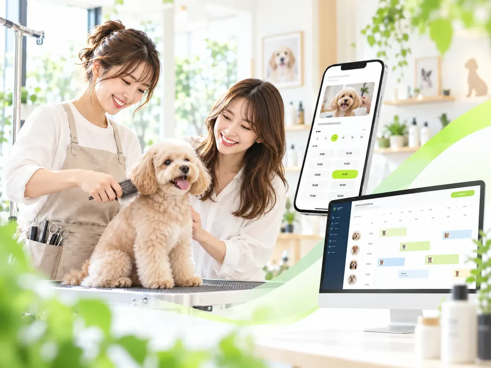

予約システム
未来の日時を押さえる「9月10日 14:00」のように、来店・診察・利用する日時を事前に確保します。
日時予約 / スタッフ / メニュー / 定員DPRO WAITING / RECEPTION SYSTEM
WEB・LINE・店頭で受付。現在の待ち状況を確認し、順番が近づいたら呼び出し。到着後は診察・着席・会計まで。「待つ」を、業種の仕事につながる流れへ変えます。
RESERVATION ≠ WAITING
だからDPROでは、ひとつの予約フォームに全部を押し込まず、業種に合った受付方式を使い分けます。
「9月10日 14:00」のように、来店・診察・利用する日時を事前に確保します。
日時予約 / スタッフ / メニュー / 定員来店前または店頭で受付し、待ち順・呼び出し・到着後の進行までつなぎます。
受付 / 待ち状況 / 呼び出し / 到着WAITING JOURNEY
WEB・LINE・店頭・電話など、業種に合う入口から受付。
現在の順番、待ち人数、進行状況を分かりやすく共有。
順番が近づいたお客様へ案内。店外待機にも対応しやすく。
QRや受付画面で来院・来店を確認し、現場の一覧へ反映。
診察、着席、施術など次の業務へ。そのまま進行を管理。
会計待ちや退店までつなぎ、顧客・患者履歴へ残します。
4 INDUSTRY PATTERNS
予約・当日受付、WEB問診、待ち状況、院内進行まで。患者スマホと受付iPad・医院PCを同じ流れへ。

LINE診察券 → 当日順番受付当日順番受付、日時指定予約、QR来院受付から会計待ちまでを進行管理。
30分予約に加え、当日急患受付、来院チェックイン、待ち列管理、電話・窓口受付まで。
日時予約と当日順番受付を両立。呼び出し、到着、着席、会計・退店、卓回転までつなぎます。
WHY DPRO
単独の整理券システムではなく、受付情報を顧客・患者情報や現場進行へつなげるのがDPROの考え方です。
FAQ
予約は未来の日時を確保する仕組み、順番待ちは当日に受付した人の案内順を管理する仕組みです。DPROには両方を組み合わせる製品があります。
対応するDPRO製品では可能です。入口や通知方法などの対応範囲は各製品・導入内容によって異なります。
DPRO MEDICALなど、待ち状況や進行を利用者側へ共有する構成があります。
医療機関、動物病院、歯科、焼肉店など、当日受付や待ち列管理に対応するDPRO製品があります。
あなたの業種に、日時予約・順番受付・当日受付のどの組み合わせが合うか整理します。